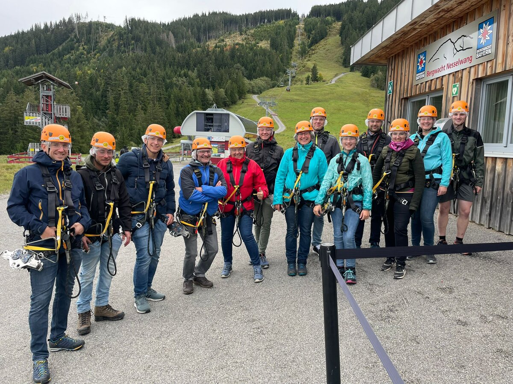

1. Jahr
Anfänger
Instrument (wenn verfügbar) kostenlos vom Verein. Eltern haften bei Verlust/Beschädigung. Falls kein Instrument verfügbar, übernimmt die Kapelle die Leihgebühr.
Nachwuchs
Ausbildung, Förderung und die Jugendkapelle – Nachwuchs ist uns wichtig.
Uns liegt die Jugendausbildung sehr am Herzen – deshalb erstatten wir Eltern einen Teil der Unterrichtskosten an der Musikschule.
Instrument (wenn verfügbar) kostenlos vom Verein. Eltern haften bei Verlust/Beschädigung. Falls kein Instrument verfügbar, übernimmt die Kapelle die Leihgebühr.
Zuschuss der Unterrichtsgebühren, wenn die SchülerInnen im Spielkreis oder der Jugendkapelle mitspielen.
Zuschuss bei aktiver Teilnahme in Musikkapelle und Jugendkapelle oder Orchester der Musikschule.
Änderungen der Förderkriterien behalten wir uns vor. Die Musikkapellen bestimmen individuell den Zeitpunkt der Aufnahme in die Stammkapelle. Ein D1-Kurs ist erforderlich.

Gemeinschaft
Ob Musikausflug, Neujahrsblasen oder einfach ein gemütlicher Abend – bei uns steht die Gemeinschaft im Mittelpunkt. Jung und Alt wachsen zusammen.
Gemeinsam musizieren, gemeinsam wachsen – die „Weschtallgaier Notenchaos" verbindet Jugendliche aus vier Musikkapellen.
— Ellhofen · Simmerberg · Stiefenhofen · WeilerDie Jugendkapelle „Weschtallgaier Notenchaos" vereint Jugendliche aus den Musikkapellen Ellhofen, Simmerberg, Stiefenhofen und Weiler. Wir musizieren gemeinsam bei Konzerten und Auftritten – dazu gibt es immer wieder ein tolles Rahmenprogramm.
Unsere Ansprechpartner helfen gerne weiter.